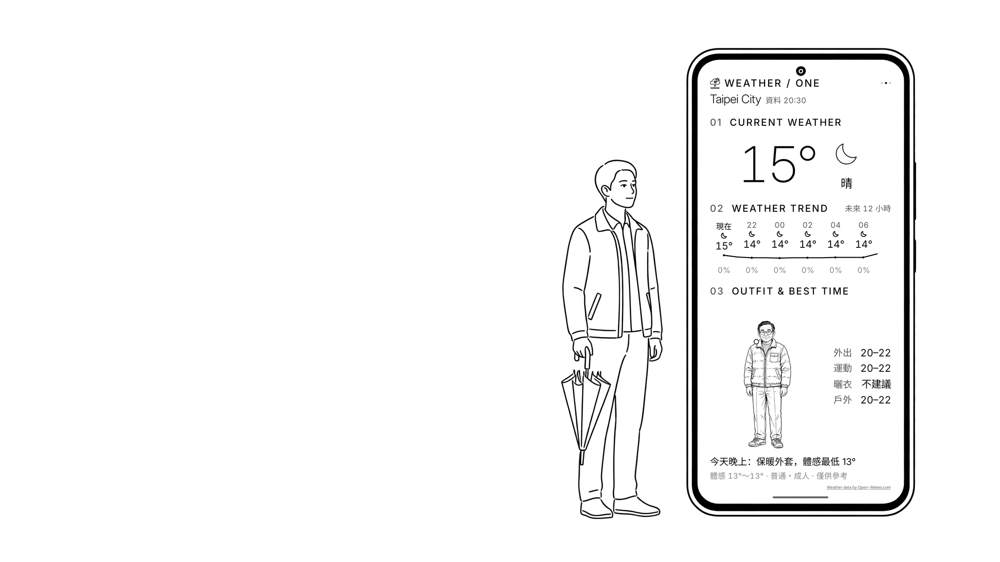
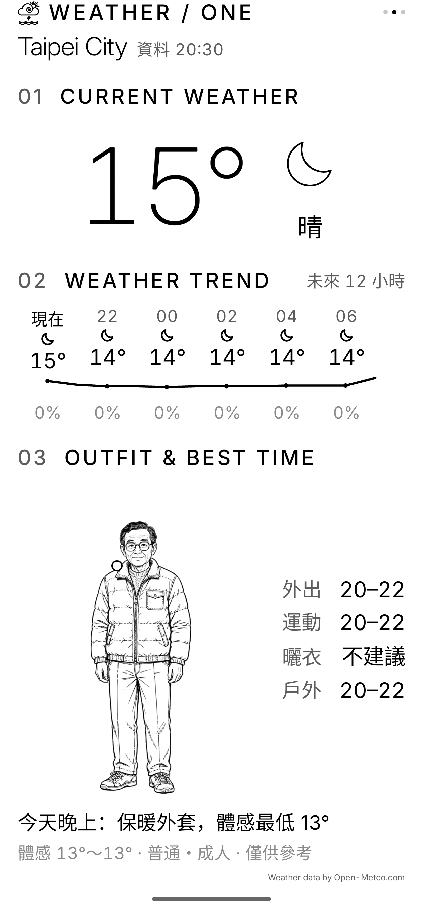

一頁看完今天的天氣
現在幾度、接下來 12 小時、出門該穿什麼。
免費下載 Android 版Android 8.0 以上・GitHub 試用版・沒有廣告、不用註冊
目前天氣、未來 12 小時趨勢、穿衣建議在同一個畫面，不用捲、不用切分頁。
依體感溫度、怕冷怕熱、年齡層，用線條人物畫出今天的穿著，附出門、運動、曬衣的最佳時段。
降雨雷達（台灣附近，氣象署）、雲圖、風場、颱風路徑與地震，平面地圖和地球兩種看法。
黑白線條設計，沒有廣告、不用註冊、不追蹤；字體大小跟著手機系統。
1×1 到 4×4 自動換版面，大尺寸附穿衣人物。

weather-one.apk。GitHub 版免費試用，之後會在 Google Play 上架。